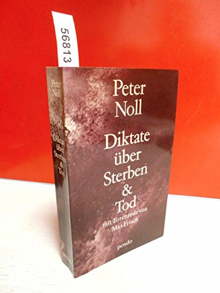
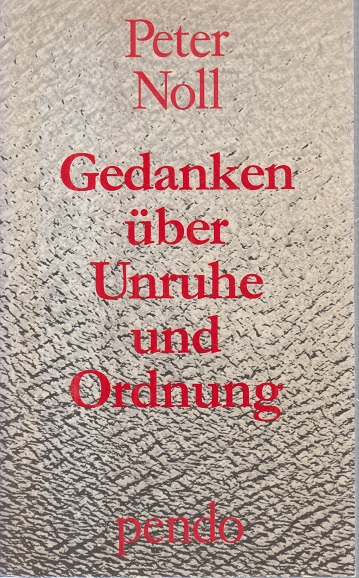
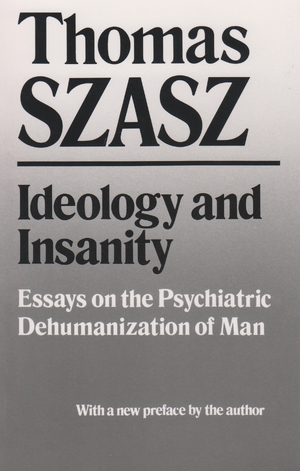
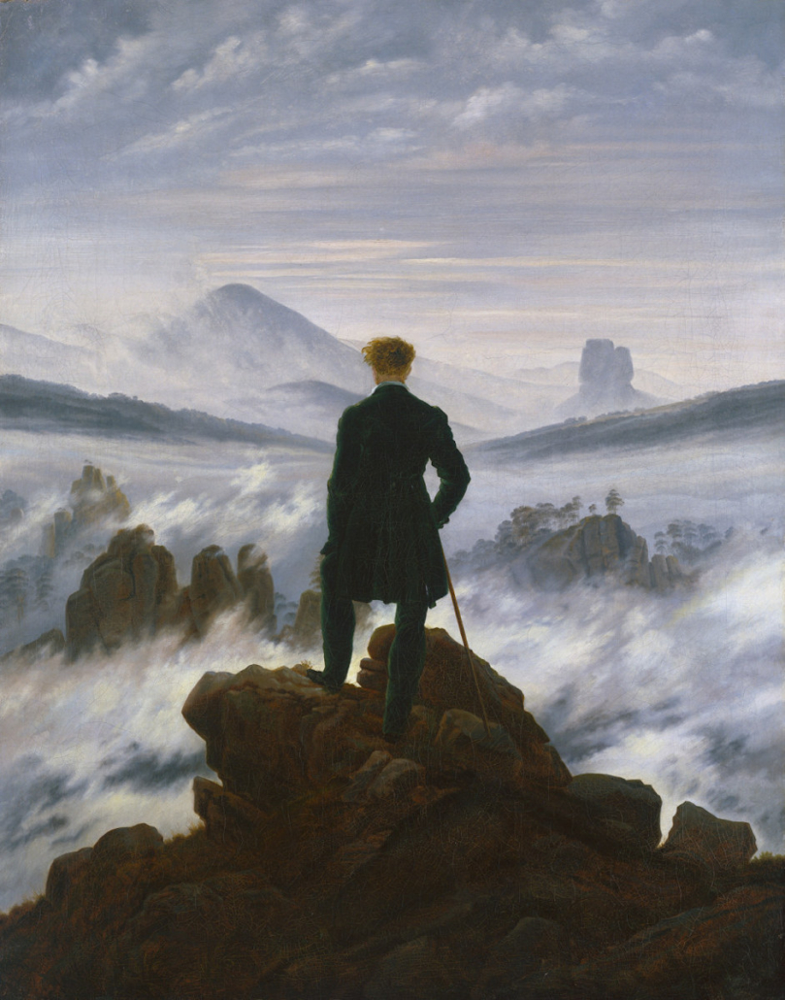
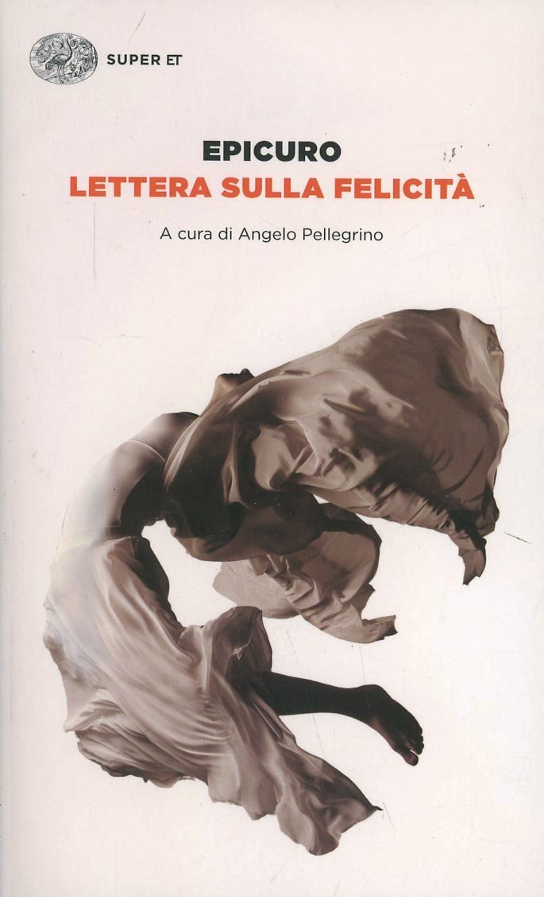
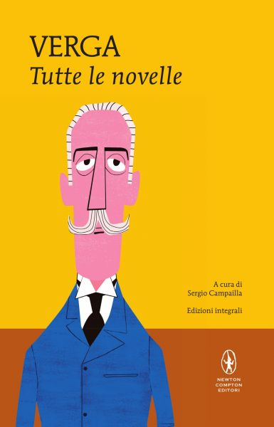
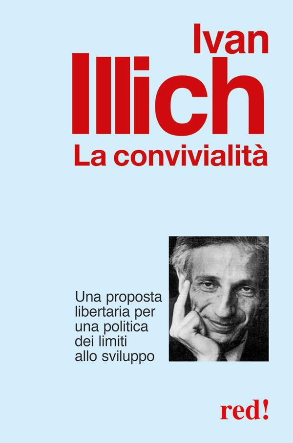

1:04:07 · 17 OPERE
Trittico su tre autori: Peter Noll, Thomas Szasz, Ivan Illich.
Il filo del discorso
Il relatore costruisce un trittico sulla libertà personale intrecciando due libri di Peter Noll, la critica psichiatrica di Thomas Szasz e La convivialità di Ivan Illich. La domanda comune è come una persona possa conservare la capacità di giudicare quando l’ordine, la cura e la sicurezza tendono a diventare ragioni per affidarsi interamente a un apparato. Il discorso prende forma attraverso letture, esempi letterari, immagini e digressioni polemiche sul presente. Il diario di Noll offre il centro esistenziale del percorso: un uomo vicino alla morte continua a osservare, scegliere e pensare. Il relatore ammira la sua indipendenza e la collega alla raccolta Gedanken über Unruhe und Ordnung, in particolare al problema dei fini del potere e della pena. La scelta biografica di Noll rispetto agli interventi proposti resta individuale, senza implicare un giudizio generale sull’efficacia delle cure oncologiche. Va inoltre precisato che Diktate über Sterben & Tod uscì anche in italiano come Sul morire e la morte, Mondadori 1985, contrariamente a quanto viene affermato oralmente. La lettura di Szasz sposta il problema sul linguaggio: secondo l’autore, il dominio può presentarsi come aiuto e sottrarre a chi lo subisce perfino le parole con cui descriverlo. Il relatore applica questa tesi ai rapporti tra competenza, istituzioni e dissenso. La posizione radicale di Szasz sulla psichiatria viene conservata come argomentazione storica e politica, distinta da una conclusione clinica sulla realtà della sofferenza mentale o sul valore di trattamenti appropriati. Le accuse rivolte nel video a esponenti politici e agli interessi economici rimangono giudizi del relatore. Pascal, la caverna platonica, Socrate, Epicuro e le ombre omeriche permettono di articolare immagini diverse del soggetto davanti alla morte. Il quadro di Friedrich è identificabile probabilmente nel Viandante sul mare di nebbia. Anche il richiamo a Verga richiede una distinzione: viene nominato Mastro-don Gesualdo, ma la scena narrata riguarda Mazzarò e La roba. Questi riferimenti alimentano il contrasto, proposto dal relatore, tra un’identità capace di pensiero e un’identità ridotta al possesso. Con Illich il tema diventa la dipendenza da servizi che promettono di migliorare la vita. I passi letti sulla medicalizzazione e sulla salute certificata appartengono effettivamente a La convivialità. Il loro accostamento al Green Pass è un’interpretazione del relatore, non la prova di una previsione specifica o di un piano continuativo. Il ritorno conclusivo a Noll mette al centro il problema dei fini: la coerenza tecnica di un sistema non basta a renderlo giusto, se le persone rinunciano a interrogarne lo scopo.
I libri nel discorso

Diktate über Sterben & Tod (Sul morire e la morte)
Fotografia della copertina: Pendo, edizione tedesca, ISBN 9783858420794; fotografia di un esemplare
Fotografia autentica di un esemplare Pendo con copertina e dorso visibili. Il relatore descrive una diversa copertina con lampada e vetri: questa fotografia illustra la stessa opera senza identificarne l’edizione mostrata nel filmato.
Titolo tedesco pronunciato nell’apertura; diario di Noll, morte, rapporto con Max Frisch, copertina descritta e ritorno conclusivo. Traduzione italiana del 1985 riscontrata esternamente, in contrasto con l’assenza affermata nel video.
Passaggio 0:48 ↗ · Fonti e libro ↗
Tao tê ching
Copertina: Adelphi · Tao tê ching · edizione di riferimento
Immagine associata all’ISBN di riferimento e controllata visivamente; edizione e traduzione non identificate come quelle citate o lette nel video.
Titolo Tao Te Ching e Laozi nel confronto sulle rappresentazioni della morte; la redazione su richiesta del guardiano appartiene alla tradizione leggendaria.
Passaggio 4:33 ↗ · Fonti e libro ↗
Gedanken über Unruhe und Ordnung
Copertina: Pendo, Zurigo, 1985; fotografia della copertina dell’edizione ISBN 9783858421005
Immagine autentica dell’opera, controllata interamente; l’esemplare illustrato non è attribuito al filmato.
Titolo tedesco, contrasto Unruhe/Ordnung e riflessione sul fine etico della pena. Il 1988 citato è una ristampa Piper; prima pubblicazione Pendo 1985.
Passaggio 9:02 ↗ · Fonti e libro ↗
Sorvegliare e punire. Nascita della prigione
Copertina: Edizione italiana Einaudi Tascabili, traduzione di Alcesti Tarchetti; ISBN 9788806174767. La scheda libraria indica 2005 e una successiva data commerciale 2012, che non si assume come prima pubblicazione.
Immagine autentica dell’opera, controllata visivamente; l’edizione di riferimento non è attribuita al filmato.
Foucault e il titolo Sorvegliare e punire sono nominati esplicitamente, nel confronto polemico del relatore con Noll.
Passaggio 11:47 ↗ · Fonti e libro ↗
Il Principe
Copertina: Feltrinelli · 2013 · a cura di Ugo Dotti
Immagine autentica dell’opera, controllata visivamente; l’edizione di riferimento non è attribuita al filmato.
Il Principe e Machiavelli nel ragionamento sulla giustificazione e lo smascheramento dei meccanismi del potere; Foscolo è richiamato come interprete, senza un suo titolo autonomo.
Passaggio 12:38 ↗ · Fonti e libro ↗
Ideology and Insanity. Essays on the Psychiatric Dehumanization of Man (Disumanizzazione dell’uomo. Ideologia e psichiatria)
Copertina: Syracuse University Press, 1991, nuova prefazione dell’autore
Copertina fornita dall’editore Syracuse University Press per la ristampa 1991. È la stessa raccolta, non la copertina Penguin del 1974 ricordata dal relatore; edizione illustrata distinta da quella citata.
Introduzione del libro di Szasz, poi titolo inglese e copia Penguin ricordata al 1974; lettura in inglese e traduzione commentata del passo sul potere che sottrae alle vittime il linguaggio per denunciarlo.
Passaggio 20:14 ↗ · Fonti e libro ↗
La Repubblica
Identificazione probabile
Copertina: Laterza · La Repubblica · edizione con testo a fronte di riferimento
Immagine associata all’ISBN di riferimento e controllata visivamente; edizione e traduzione non identificate come quelle citate o lette nel video.
L’immagine della caverna di Platone identifica probabilmente Repubblica VII, 514a–521b; il titolo dell’opera non è pronunciato.
Passaggio 36:23 ↗ · Fonti e libro ↗
Pensieri
Identificazione probabile
Copertina: UTET · a cura di Bruno Nacci · 2021
Copertina autentica dell’edizione di riferimento, non attribuita all’esemplare del video.
Pascal e la canna pensante, motivo identificabile nei Pensieri; titolo non pronunciato, identificazione del passo e non di un’edizione.
Passaggio 39:05 ↗ · Fonti e libro ↗
Viandante sul mare di nebbia (Wanderer über dem Nebelmeer)
Identificazione probabile
Riproduzione del dipinto: Dipinto, circa 1817, Hamburger Kunsthalle; riproduzione della Stiftung Hamburger Kunstsammlungen
Riproduzione integrale del dipinto, non una copertina editoriale. Il titolo è un’identificazione probabile a partire dalla descrizione orale; non è dichiarato esplicitamente nel filmato.
Quadro di Friedrich descritto con figura di spalle, bastone e roccia. Titolo non detto: identificazione probabile col Viandante sul mare di nebbia, non un dipinto marino in tempesta.
Passaggio 39:32 ↗ · Fonti e libro ↗
Apologia di Socrate
Identificazione probabile
Copertina del volume Apologia di Socrate. Critone: BUR · Apologia di Socrate. Critone · a cura di Maria Michela Sassi, 1993
Copertina autentica del volume BUR contenente Apologia di Socrate e Critone. Il secondo titolo non è aggiunto come citazione del video; l’autore del testo è Platone, con Socrate come figura protagonista.
Il doppio esito della morte, sonno senza sensazioni oppure colloquio con i grandi del passato, identifica probabilmente Apologia 40c–41c; titolo non pronunciato.
Passaggio 40:59 ↗ · Fonti e libro ↗
Lettera sulla felicità (a Meneceo)
Identificazione probabile
Copertina: Einaudi · Super ET · 2014
Copertina autentica dell’edizione di riferimento, controllata visivamente. Non identifica l’esemplare letto o citato nel video.
Massima epicurea sull’alternativa fra presenza nostra e presenza della morte: identificazione probabile della Lettera a Meneceo, §§124–125, senza titolo esplicito.
Passaggio 41:41 ↗ · Fonti e libro ↗
Odissea
Identificazione probabile
Copertina: Einaudi · ET Classici · 2014
Copertina autentica controllata visivamente. Edizione di riferimento, non identificata come quella usata nel video.
Omero e la preferenza per una vita umilissima rispetto al regno delle ombre: probabile rinvio al discorso di Achille a Odisseo in Odissea XI, 488–491. La parafrasi del relatore dice schiavo, il passo parla di servire come lavoratore a paga.
Passaggio 42:11 ↗ · Fonti e libro ↗
Storie (The Histories)
Identificazione probabile
Copertina: Penguin Classics Deluxe Edition,19 maggio 2015,880 pagine, traduzione Tom Holland, introduzione e note Paul Cartledge.
Immagine autentica dell’opera, controllata visivamente; l’edizione di riferimento non è attribuita al filmato.
Solone dinanzi a Creso e la buona morte: probabile rinvio a Storie I, 30–32. Titolo e autore non detti; nel racconto di Tellos la valutazione della felicità comprende anche l’intera vita, non la sola morte per la patria.
Passaggio 44:37 ↗ · Fonti e libro ↗
Memorie del sottosuolo
Copertina: Theoria · Futuro Anteriore, 2022 · edizione di riferimento
Titolo esplicito Memorie del sottosuolo e richiamo all’incipit dell’uomo malato, nella discussione sul nichilismo.
Passaggio 46:34 ↗ · Fonti e libro ↗
Mastro-don Gesualdo
Copertina: BUR,7 maggio 2003,480 pagine, ISBN 9788817106962; introduzione e note Giulio Carnazzi indicate sulla copertina. Originale in rivista1888e in volume 1889, con data1890sul frontespizio della prima stampa. Non 1883. La copertina moderna è distinta dalla prima edizione.
Immagine autentica dell’opera, controllata visivamente; l’edizione di riferimento non è attribuita al filmato.
Il relatore nomina Mastro-don Gesualdo, ma il brano che descrive subito dopo è riconoscibile come La roba: il titolo esplicitamente detto è conservato con questa precisazione.
Passaggio 48:17 ↗ · Fonti e libro ↗
La roba
Identificazione probabile
Copertina della raccolta Tutte le novelle: Newton Compton · Tutte le novelle · MiniMammut 209 · a cura di Sergio Campailla
Copertina autentica della raccolta integrale Newton Compton, ISBN 9788822700612. La roba è una novella di Novelle rusticane, compresa nella raccolta; la copertina non appartiene a un volume autonomo della singola novella.
Identificazione dal paesaggio iniziale di Lentini, dall’onnipresenza dei possedimenti e dal finale con l’uccisione degli animali: sono Mazzarò e La roba, non la scena finale di Mastro-don Gesualdo. Nel testo gli animali sono anitre e tacchini; titolo non pronunciato.
Passaggio 48:24 ↗ · Fonti e libro ↗
La convivialità. Una proposta libertaria per una politica dei limiti allo sviluppo
Copertina: Red!, 2013, Economici di qualità, ISBN 9788857304984
Copertina autentica Red! 2013, identificata da ISBN e catalogo. Il relatore ricorda una traduzione italiana del 1974: la ristampa illustrata non viene presentata come quella posseduta nel video.
Titolo italiano esplicito e letture sul mondo trasformato in ospedale e sulla certificazione della salute. Passi riscontrati nel testo di La convivialità; confronto con il Green Pass proposto dal relatore, non profezia documentata.
Passaggio 56:03 ↗ · Fonti e libro ↗